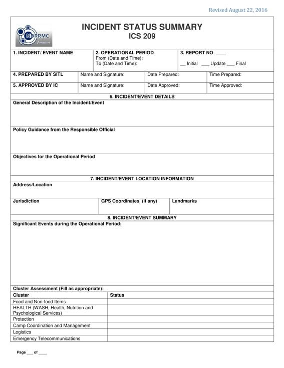
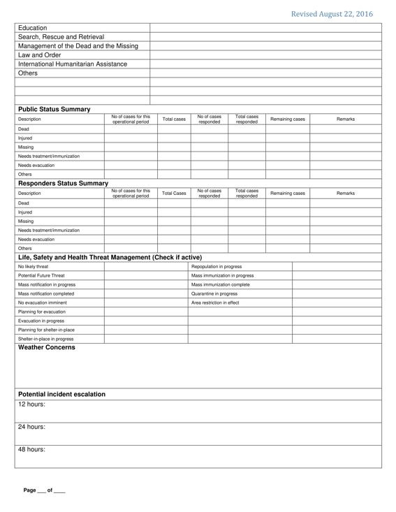
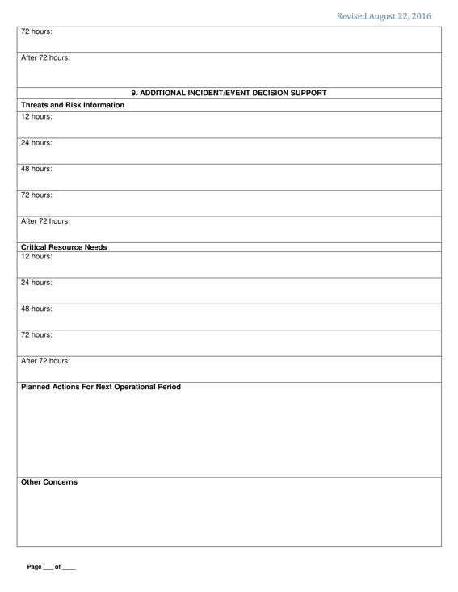
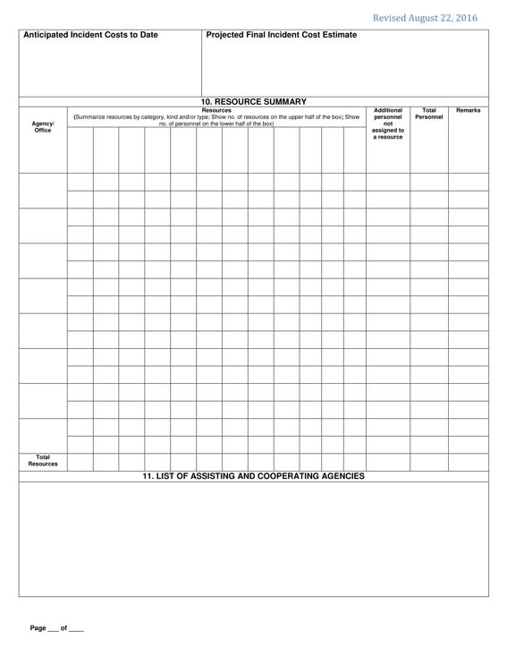

PURPOSE: The ICS 209 is used to provide snapshot of the incident. It contains basic information needed to support decision making at all levels in managing incident operations. It keeps the decision makers informed of the status of the incident and resources. It is also is intended to be used when an Incident reaches a certain threshold requiring additional resources to support the operations. As such, it also helps to increase additional public safety.
The ICS 209 is generally used for the following purposes:
PREPARATION: The ICS 209 is accomplished by the Situation Unit Leader (SITL) or the Planning Section Chief (PSC) and for approval of the Incident Commander (IC).
DISTRIBUTION: The ICS 209 is submitted to the Emergency Operation Center.




BLOCK NO. |
BLOCK TITLE |
INSTRUCTIONS |
| 1 | Incident / Event Name | Indicate the name assigned to the incident / event. |
| 2 | Operational Period | Indicate the duration of the dates (mm-dd-yyyy) and times (24-hour format) of the operational period. |
| 3 | Report No. | Indicate the number of the report.
|
| 4 | Prepared by SITL | Enter complete name of the IMT member, signature, date (mm-dd-yyyy), and time (24 hour format) the form was prepared and completed. Note: The form is prepared usually by the SITL. In the absence of SITL, it shall be prepared by the PSC. |
| 5 | Approved by IC | Enter complete name of the IC, signature, date (mm-dd-yyyy), and time (24-hour format) the form was approved. |
| 6 | incident / Event Details | Enter the specific details about the incident / event. |
| General Description of the incident / Event | Note: Refer to ICS 201-1. |
|
| Policy Guidance from the Responsible Official | Indicate the directives and Guidance of the Responsible Official. |
|
| Objectives for the Operational Period | Note: Refer to ICS 202. |
|
| 7 | incident / Event Location Information | Enter the specific details of the incident / event location |
| Address/ Location | Indicate the complete location of the incident (e.g. sitio, barangay, City/Municipality, Province, Region). |
|
| Jurisdiction | Indicate if barangay, City/Municipal or Province where the incident occurred/happened. |
|
| GPS Coordinates (if any) | Enter the GPS Coordinates if available. |
|
| Landmarks | Indicate visible facilities, structure or landmark near incident / event area. |
|
| 8 | incident / Event Summary | Enter the summary of the progress of the incident / event. |
| Significant Events during the Operational Period | Describe the events relating to safety and security of the responders as well as significant achievements within the operational period. Note: Refer to ICS 201-2. Indicate the Five (5) Ws and (1) H (What, Where, When, Why, Who and How). |
|
| Cluster Assessment (Fill as appropriate) | Note: Refer to ICS 201, 211, 215, and other important details from the EOC. |
|
| Status | Indicate the current status of the clusters. It may include the inventory of resources of the clusters:
|
|
| Public Status Summary | Indicate the number of casualties of the public (dead, injured, missing). Also indicate brief summary of the circumstances of the incident (e.g. Ignoring the Warning Advisory and signs of imminent threat). |
|
| Responders Status Summary | Indicate the number of casualties of responders (dead, injured, missing) . Also, indicate brief summary of the circumstances of the incident. |
|
| Life, Safety and Health Threat Management (Check if active) | Check the appropriate item. |
|
| Weather Concerns | Indicate the weather forecast, synopsis and predicted weather that may cause another concerns or secondary threats. Note: Refer to ICS 202 item 7 and ICS 208. |
|
| 9 | Additional incident / Event Decision Support | Enter important information for additional incident / event decision support. |
| Threats and Risk Information | Identify corresponding incident-related potential economic and cascading impacts within the specified time. |
|
| Critical Resource Needs | Indicate the list of resources needed describing the category, kind, type and amount needed within the specified timeframe. |
|
| Planned Actions for the Next Operational Period | Indicate the identified critical resources need. Present the IAP and management objectives and targets for the next operational period. |
|
| Other Concerns | Indicate the probability of developing incident. |
|
| Anticipated Incident Cost to Date | Indicate the estimated amount spend during the operational period. |
|
| Projected Final Incident Cost Estimate | Indicate the projected total operational cost |
|
| 10 | Resource Summary | Enter the summary of resources for the operational period. |
| Agency/ Office | Enter the name of agency/office that deployed resources for the incident / event. |
|
| Resources | Summarize resources by category, kind and/or type.
|
|
| Additional personnel not assigned to a resource | Enter number of additional individual personnel (such as overhead) not assigned to a specific resource. |
|
| Total Personnel | Enter total number of personnel for each agency/office. This must include the additional personnel not assigned to a resource. |
|
| Remarks | Enter other important information about the agency/ office or the resources assigned. |
|
| Total Resources | Enter the total number of resources. |
|
| 11 | List of Assisting/ Cooperating Agencies | Enumerate the assisting and cooperating agencies involved in the incident / event. |